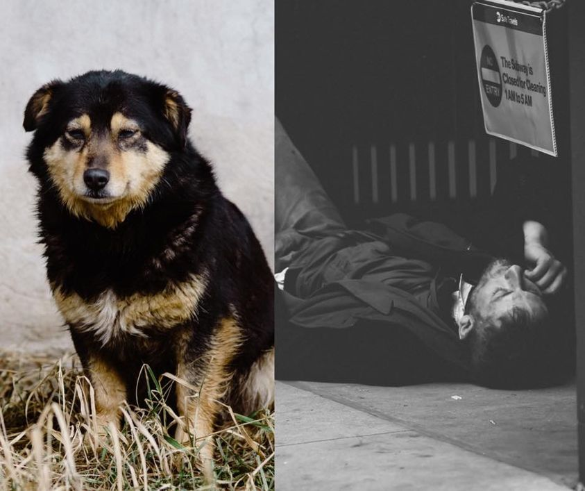

Mobile uploads
I believe we need to talk more, not less, about our bigotries.
For a communal creature like humans, there Is nothing more natural than making snap decisions on who we like and who we don’t like based on how they look and act. For 280,000 years that’s how we survived.
Which one of these creatures do you feel more love, worry and compassion for? (You should also know that scientists have long known that humans are also wired for compassion.)